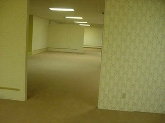

Se había dormido, eso era lo único que recordaba. Y ahora...bueno, ahora estaba en este lugar.
El opaco verde amarillento inundaba todo el sitio, estaba presente en las paredes gastadas, en la alfombra sucia y en esos bulliciosos tubos de luz verde fluorescente, fijados en los techos, que podrían fácilmente tapar de manera considerable cualquier otro sonido que pudiera producirse en tal extraño lugar.
Solo que no había ninguno, o eso creía. Parecía encontrarse solo en lo que recordaba a antiguos complejos donde normalmente se instalarían oficinas, pero el recinto estaba vacío.
¿Por qué estaba ahí? No alcanzo a pensar demasiado cuando escucho ruidos extraños cerca.
